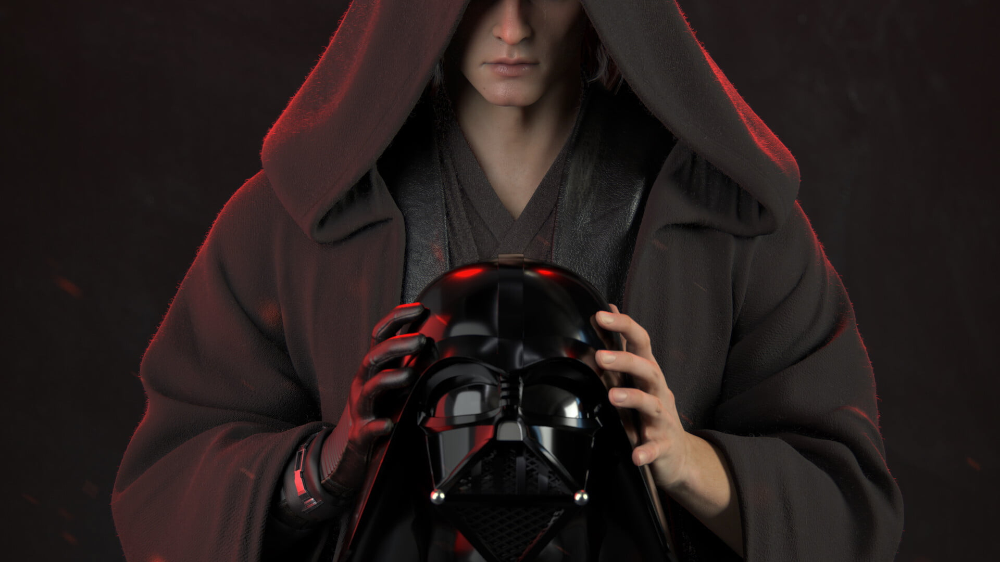
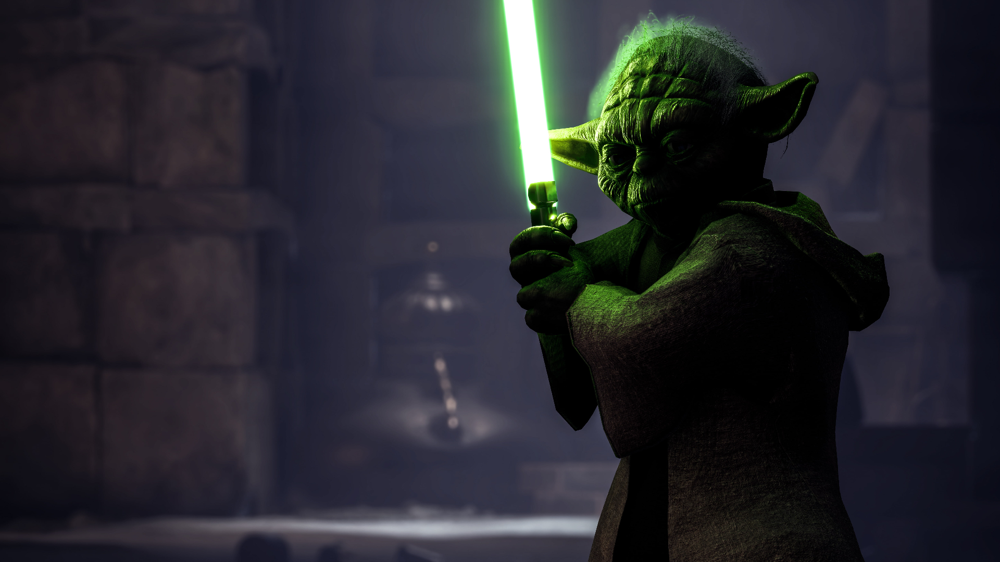
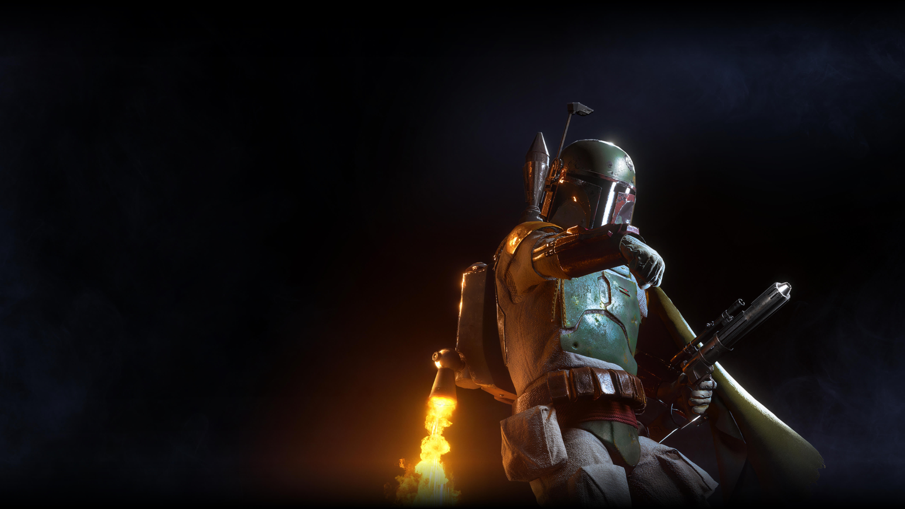
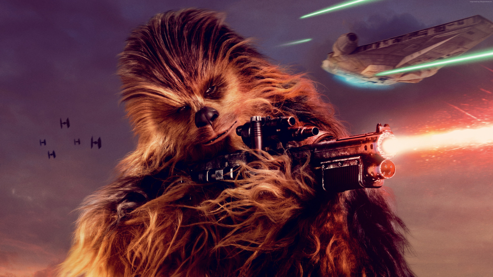
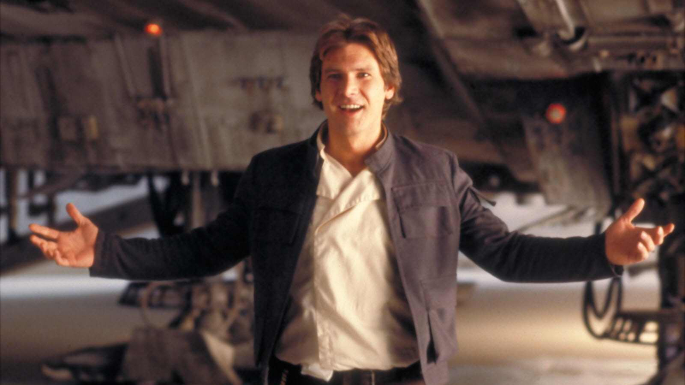
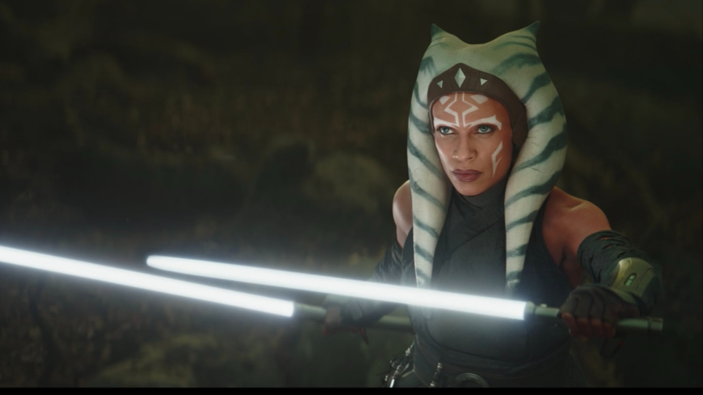

Anakin Skywalker, más tarde Darth Vader, es el personaje central de la famosa saga de
Star Wars del director George
Lucas
Anakin Skywalker

Yoda es un personaje ficticio del universo de Star Wars, era uno de los más renombrados
y poderosos maestros Jedi
durante toda la historia de la Galaxia, y uno de los pocos Jedis de la República
Galáctica en sobrevivir hasta la Guerra
Civil Galáctica
Yoda

Boba Fett fue un cazarrecompensas humano, y el clon del infame cazarrecompensas Jango
Fett. Boba fue creado por los
clonadores de Kamino y era físicamente idéntico a los soldados clon creados para el Gran
Ejército de la República,
aunque Boba fue inalterado y no creció aceleradamente como los demás clones
Bobba Fett

Es un wookiee, un bípedo alto, peludo y robusto, especie inteligente originario del
planeta Kashyyyk. Chewbacca es el
leal amigo y socio de Han Solo, y sirve como copiloto en la nave espacial de Solo, el
Halcón Milenario
Chewbacca

Han Solo, un audaz ladrón desde pequeño, servidor de la rebelión, gran pistolero y
piloto, dueño del Halcón Milenario y gran amigo de Chewbacca.
Han Solo

Presentada como la padawan jedi de Anakin Skywalker, Ahsoka Tano, gran Jedi y ayudante
de la rebelión